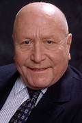
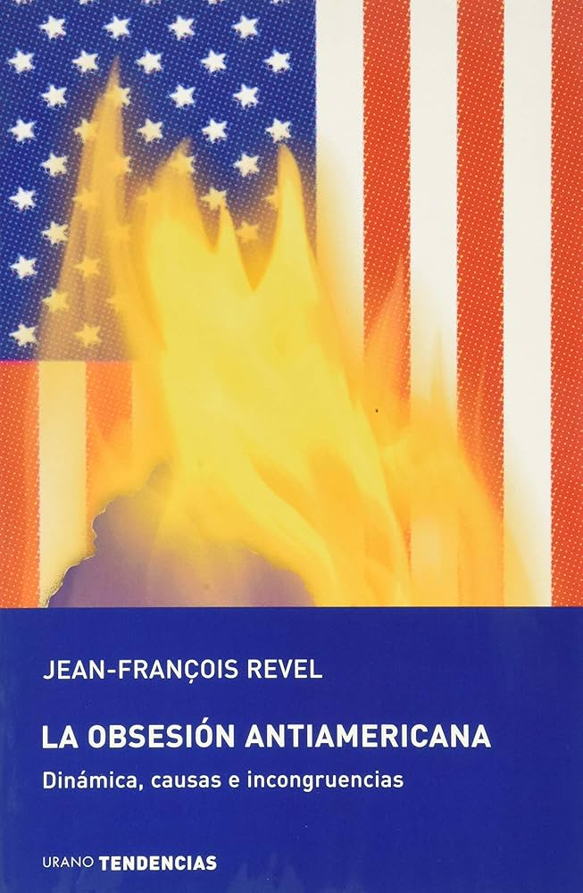

La Obsesión Antiamericana
Dinámica, causas e incongruencias
Jean-Francois Revel
 ¿De qué se trata este libro?
Estados Unidos ha sido siempre objeto de una mezcla de amor y odio, de envidia y desprecio, por parte del resto del planeta. Especialmente después de la caída del bloque comunista, que los dejó como única superpotencia mundial. ¿Cuáles son las raíces del antiamericanismo? ¿Posee una base objetiva? ¿Responde al conocimiento de los hechos de la realidad o se explica sólo por un resentimiento irracional alimentado por los fantasmas y la desinformación? Después de los atentados del 11 de septiembre se requiere más que una explicación, una actualización de la cuestión del antiamericanismo, esa doble demonización que padecen los Estados Unidos como modelo de sociedad y como primera fuerza económico-político-militar mundial. A esto se dedica Jean-Francois Revel en La Obsesión Antiamericana. ¿Cómo son vistos los Estados Unidos por los demás y cómo son en realidad? La respuesta es una inteligente denuncia de las contradicciones del antiamericanismo y de las incongruencias de los críticos de la globalización liberal.
Jean-Francois Revel
Nació hace 78 años en Marsella y vive actualmente en París. Dotado de enorme dinamismo, este filósofo, historiador, escritor y académico de la lengua francesa se proclama ateo y defensor del liberalismo democrático, el único sistema que funciona en su opinión. Autor de una cuarentena de obras entre ensayos políticos, históricos y literarios. Revel es uno de los mayores polemistas, si no el mayor, del panorama filosófico-periodístico francés actual. Gran comunicador, inició su carrera literaria y periodística en 1957 trabajando como asesor literario y como columnista habitual de diversos periódicos. Entre 1978 y 1981 dirigió el semanario L'Express y actualmente es colaborador habitual del periódico Le Point.
Miembro de la Legión de Honor, entre sus obras destacadas Ni Marx Ni Jesús y El Monje y el filósofo, publicado también por Ediciones Urano.
Recientemente recibió en España el Premio Manuel Ibañez Escofet por el artículo "La democracia o el hambre", publicado en julio de 2002 en el periódico Le Point.
Opiniones
"Un libro devastador e irónico que pone en su sitio a los maníacos de la nueva religión, el antiamericanismo. El mejor Revel".
Le Point

"Este libro ataca la obsesión antiamericana con un vigor e inteligencia inusitados y desmonta uno por uno, con tanta claridad como precisión, todos sus mecanismos".
Le Monde
Urano TENDENCIAS
Libros para entender el presente y preparar el futuro.
En los tiempos de grandes cambios que vivimos, la colección Urano Tendencias se interroga sobre las incógnitas que preocupan al ciudadano del siglo XXI. Las nuevas realidades requieren libros que reflejen los cambios, textos que orienten en medio de la enorme avalancha de informaciones en que estamos inmersos. Urano Tendencias ofrecen estas respuestas con rigor y amabilidad.